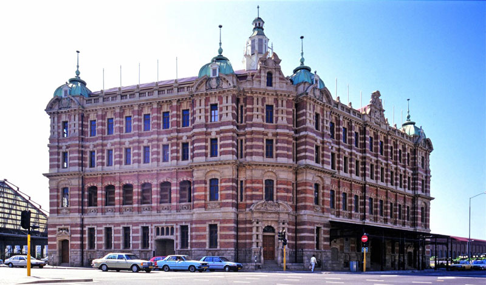

Welcome to Berea College of Technology
Student Portal
A student portal is a vital online platform designed to enhance the educational experience by facilitating communication, access to resources, and engagement among students, faculty, and administrative staff within educational institutions. By consolidating various academic and administrative functions into one centralized system, student portals provide a range of benefits that contribute significantly to students' academic success and overall well-being
WhatsApp Us
